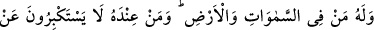
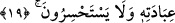

sözü ile bu kelimenin sözlükte o yerin adı olduğunu kasdetmemiştir. Onun kasdı,
Allâh’ın kendisi hakkında “veyl” dediği kimsenin bu mekânı hak ettiğini ve orasının
kendisi için sâbit olduğunu ifâdedir.
19. Göklerde ve yerde kimler varsa O’na âiddir. O’nun huzûrunda bulunanlar,
O’na ibadet hususunda kibirlenmezler ve yorulmazlar.
“Göklerde ve yerde kimler varsa O’na âiddir.” Yâni yaratma ve kul edinme
bakımından bütün mahlûkât özel olarak O’na âiddir. “O’nun huzûrunda bulunanlar,”
Bunlar ile kendilerine lütuf ve ihsanda bulunulmuş melekler murâd edilmiştir. Bu
meleklerin Allah katındaki değerlerinden dolayı, onların şerefini ve yarattıklarının
çoğundan üstün olduklarını beyan etmek için temsil yoluyla meliklerin kendilerine yakın
kıldığı kimseler gibi ifâde edilmişlerdir. Bu melekler, Ebû Bekir Bâkıllânî ve
Mu‘tezile’nin hepsinin iddiâ ettikleri gibi yaratılmışların hepsinden üstün değildirler.
Âyette “indiyyet (huzûrunda bulunma)”ile mekân ve cihet bakımından huzûrunda
bulunmak değil, şeref olarak huzûrunda bulunma kasdedilmiştir. “__WORD__ kelimesi, her ne
kadar mekan zarfı olsa da burada rütbe ve derece bakımından yakınlık, menzil ve
mesafe bakımından yakınlığa benzetilmiştir. Dolayısıyla benzetilen (müşebbeh) kendine
benzetilenin (müşebbehün bih) lafzıyla ifâde edilmiştir.
Kâşifî der ki: “Yâni, ülûhiyyet dergâhının mukarrebi olan meleklerdir ve siz onlara
tapıyorsunuz.”
“O’na ibadet hususunda kibirlenmezler” Allâh’a kulluk etme hususunda büyüklük
taslamazlar kendi nefislerini büyük saymazlar. Aksine O’nun kulu olmakla daima iftihar
ederler. Şu halde zayıflığı nihâyetsiz olan beşerin O’na itâat etmeleri daha lâyık ve
uygundur. “ve yorulmazlar.” Kullukta zayıflık gösterip ibadetten bıkmazlar.
20. Onlar, bıkıp usanmaksızın gece gündüz (Allâh’ı) tesbih ederler.
Sanki “Onlar Allâh’a nasıl kulluk ederler?” diye sorulmuş ve bu âyet bu soruya cevap
olmuştur.
“Onlar, bıkıp usanmaksızın gece ve gündüz” Allâh’ı “tesbih ederler.” Yâni bütün
vakitlerde O’nu hâdis olmanın lekelerinden, benzerleri olmaktan tenzih ederler.
Devamlı olarak O’na tâzim gösterirler ve O’nu yüceltirler (temcîd).